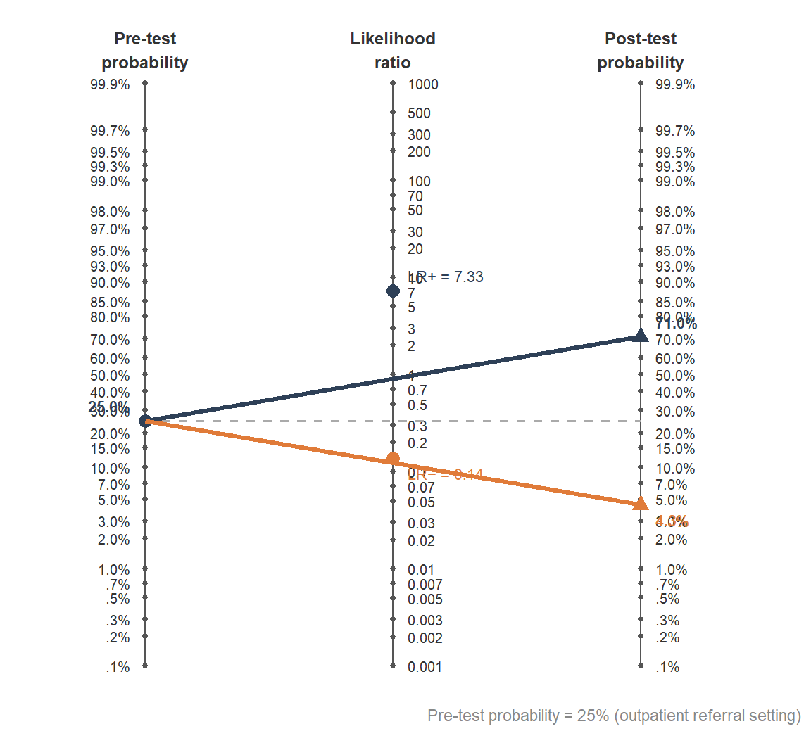
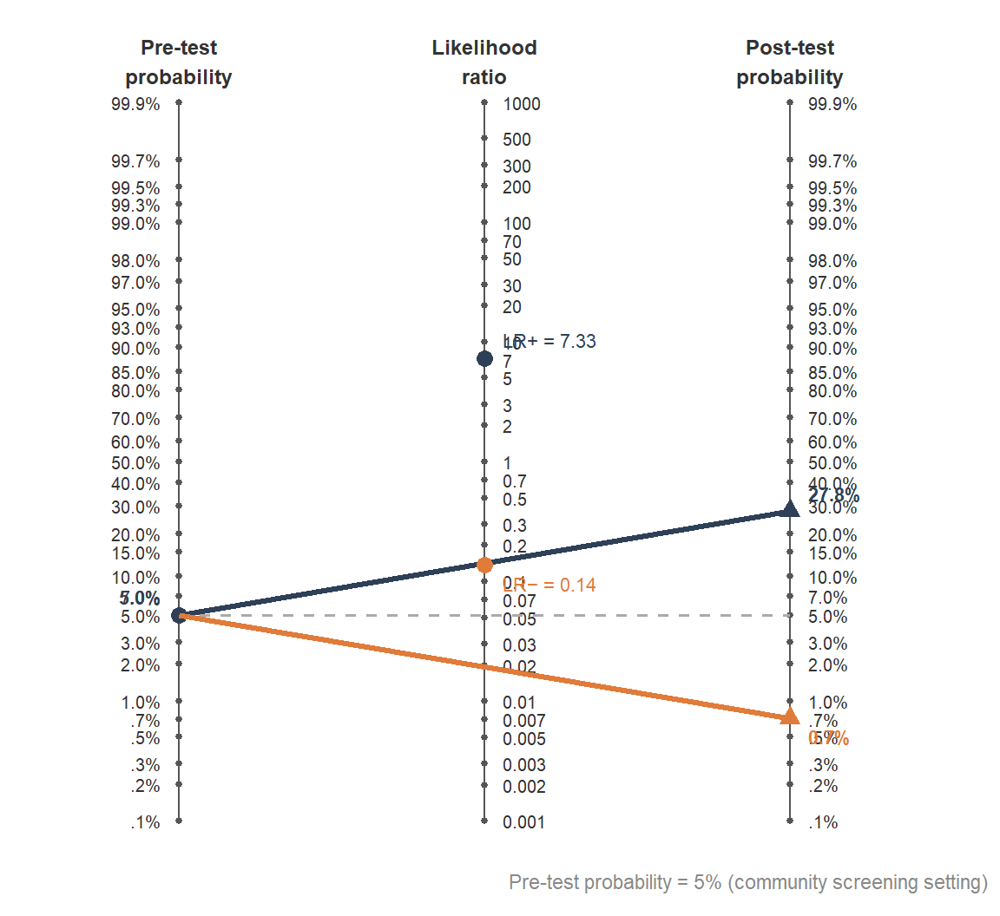
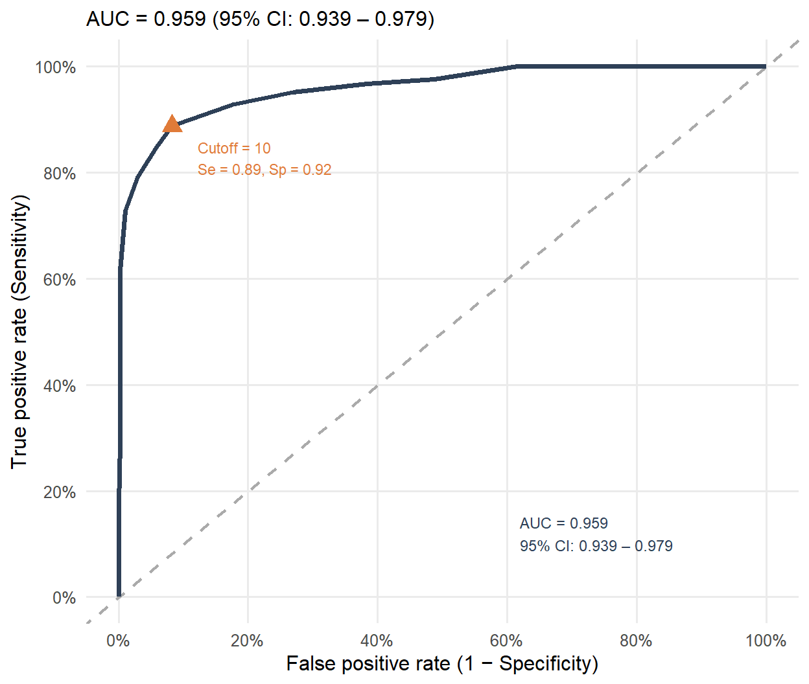
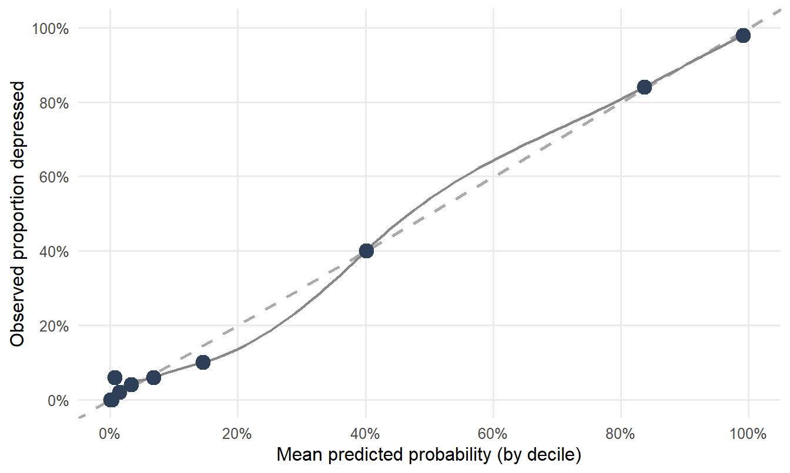

| Condition present | Condition absent | |
|---|---|---|
| **Test positive** | True Positive (TP) | False Positive (FP) |
| **Test negative** | False Negative (FN) | True Negative (TN) |
10 Does the Test Actually Classify People Correctly?
10.1 Diagnostic Accuracy and ROC Analysis
10.2 Why This Matters
The previous chapter asked whether a test measures the same construct in the same way across groups. This chapter asks a different but equally consequential question: when a test produces a number and a clinician uses that number to make a decision, how often does the decision turn out to be right?
The question sounds simple. It is not. A test can be reliable, structurally sound, and free of differential item functioning, and still classify individuals poorly. It can correlate strongly with related constructs and still fail to distinguish cases from non-cases. The properties that psychometrics has historically emphasized—internal consistency, factor structure, criterion correlations—are necessary but not sufficient for evaluating how well a test actually classifies people.
Consider two instruments used to screen children for reading difficulties. Both have internal consistency above .90. Both correlate at .70 with a criterion measure. At the district’s established cutoff, Instrument A correctly identifies 80% of children with reading difficulties and incorrectly flags 5% of typically developing readers. Instrument B correctly identifies 60% of children with reading difficulties and incorrectly flags 15% of typical readers. On all the properties typically reported in a test manual, the instruments look similar. On classification performance, Instrument B is substantially inferior.
This gap—between what is typically evaluated and what practitioners actually need to know—is the central concern of this chapter. (mcfallTreatSDT1999?) argued that conventional approaches to evaluating assessment accuracy are systematically confounded by the choice of cutting points, by base rates in different settings, and by whether the goal is nomothetic research or idiographic clinical decision-making. The tools to address these confounds are well established in medicine and epidemiology and have been available to psychology for decades. They remain, in (youngstromEBAVoyage2017?)’s phrase, underutilized.
This chapter introduces those tools, demonstrates them with two running examples, and connects their logic to the validity and fairness concepts covered in earlier chapters.
Note
A note on the data in this chapter. All analyses use simulated data. The COVID rapid antigen parameters (sensitivity ≈ .86, specificity ≈ .99) are anchored to published BinaxNOW validation studies. The PHQ-9 analog parameters (sensitivity ≈ .88, specificity ≈ .88 at cutoff 10, AUC ≈ .95) are anchored to (kroenkePHQ9_2001?). The individual observations are synthetic and do not represent real patients. This means the estimates are more stable than would be expected in a typical validation study of this size—a limitation discussed in Section 10.5.2.
10.3 Two Running Examples
All analyses draw on a single simulated dataset with two scenarios developed in parallel throughout.
Example 1: A COVID-19 rapid antigen test. We simulate 1,000 individuals tested at three different prevalence levels—low (5%), moderate (30%), and high (60%)—to demonstrate how dramatically base rate affects the meaning of test results. Most readers have personal experience with a test like this, which makes the concepts concrete before applying them to psychological measures.
Example 2: A PHQ-9 analog depression screener. We simulate a continuous-score depression screener anchored to the PHQ-9 accuracy parameters of (kroenkePHQ9_2001?): sensitivity approximately .88 and specificity approximately .88 at the standard cutoff of 10, AUC approximately .95. The sample is 500 individuals from an outpatient referral population with a 25% base rate of major depression. This example carries the chapter through its full arc—from 2×2 tables through ROC curves, AUC, likelihood ratios, and cut-score selection.
10.4 The Classification Problem
Every categorical decision based on a continuous score produces four possible outcomes. This is true whether the test is a COVID antigen swab, a depression screener, a reading fluency probe, or a neuropsychological battery. The structure is identical across domains.
The four outcomes are organized in a confusion matrix: a 2×2 table crossing true status (condition present or absent) with test result (positive or negative). Table 10.1 presents the structure. Table 10.2 shows it populated with simulated COVID data at 30% prevalence.
| Test result | Condition present | Condition absent |
|---|---|---|
| Positive | 249 | 7 |
| Negative | 39 | 705 |
Overall accuracy—the proportion of all tests that are correct—is the statistic most commonly reported in test manuals. In Table 10.2, overall accuracy is 95.4%. This sounds reassuring.
But consider what it hides. Most tests are correct because the condition is absent and the test correctly says negative. The test is doing well on the easy cases. Overall accuracy in a population where 30% have the condition is heavily weighted by performance on the 70% who do not. If the condition were rare—say, 5%—a test that called everyone negative would achieve 95% accuracy without providing any useful information.
Important
Overall accuracy is dominated by the base rate of the most common outcome. It cannot tell you how well a test performs on the group you most care about detecting.
Why No Cutoff Is Perfect
Psychological constructs do not sort neatly into “condition present” and “condition absent.” They exist as overlapping continuous distributions. Whatever cutoff is chosen, some individuals with the condition will fall below it (false negatives) and some without the condition will fall above it (false positives). Moving the cutoff changes the balance but never eliminates both types of error simultaneously. Figure 10.1 shows this directly, with each of the four confusion matrix cells annotated at the cutoff.
![Three stacked panels each showing overlapping density curves for a depressed group (dark blue, mean = 15) and non-depressed group (orange, mean = 5.5) on a 0-27 PHQ-9 analog scale. Each panel has a vertical dashed cutoff line at score 7, 10, or 13 respectively. Orange shaded area to the right of the non-depressed curve is labeled FP. Dark blue shaded area to the left of the depressed curve is labeled FN. Unshaded area to the right under the depressed curve is labeled TP. Unshaded area to the left under the non-depressed curve is labeled TN. The lenient cutoff (7) has large FP and small FN regions; the strict cutoff (13) has small FP and large FN; the standard cutoff (10) balances them.](10_diagnostic_accuracy_files/figure-html/fig-overlapping-distributions-1.png)
The four regions in each panel of Figure 10.1 map directly onto the confusion matrix cells. True positives (TP) are depressed individuals who score above the cutoff; the test correctly identifies them. False negatives (FN) are depressed individuals who score below the cutoff; the test misses them. False positives (FP) are non-depressed individuals who score above the cutoff; the test incorrectly flags them. True negatives (TN) are non-depressed individuals who score below the cutoff; the test correctly clears them.
The three panels illustrate the fundamental trade-off. A lenient cutoff (score 7) catches nearly all depressed individuals—the FN region is small—but generates many false positives. A strict cutoff (score 13) nearly eliminates false positives—the FP region is small—but misses a substantial proportion of depressed individuals. The standard cutoff (score 10) balances both. Which balance is appropriate depends on context—on what matters more in a given setting, and for whom. We return to this in Section 10.10.
The existence of this trade-off is also the reason ROC analysis exists, previewed in Section 10.8: rather than evaluating a test at a single, arguably arbitrary cutoff, we can map the full sensitivity–specificity trade-off space across all possible thresholds simultaneously and summarize discriminative ability with a single cutoff-independent index.
10.5 Sensitivity and Specificity
Two statistics partition the confusion matrix by true status. They ask how the test performs separately within the group that truly has the condition and the group that truly does not.
Note
Sensitivity (true positive rate) is the proportion of individuals who truly have the condition who test positive. It is a conditional probability: given that the person has the condition, what is the probability of a positive test result?
\[\text{Sensitivity} = P(\text{Test}+ \mid \text{Condition}+) = \frac{TP}{TP + FN}\]
Specificity (true negative rate) is the proportion of individuals who truly do not have the condition who test negative. It is also a conditional probability: given that the person does not have the condition, what is the probability of a negative test result?
\[\text{Specificity} = P(\text{Test}- \mid \text{Condition}-) = \frac{TN}{TN + FP}\]
Both probabilities are conditioned on known true status. They describe the test’s performance looking forward from a diagnosis that is already established.
Sensitivity and specificity describe the test itself, not the population. They do not depend on how prevalent the condition is. A test with sensitivity .88 at a cutoff of 10 has that sensitivity whether it is used in a community sample or a specialty clinic.
A useful clinical mnemonic is SnNOut / SpPIn (sackettSnNOut1991?): a highly Sensitive test means a Negative result rules Out the condition; a highly Specific test means a Positive result rules In the condition. The COVID antigen test illustrates SpPIn: specificity is .99, so a positive result strongly rules in infection. Sensitivity is .86, so a negative result does not fully rule out infection—a known limitation that motivated “test again tomorrow if symptomatic” guidance.
Test Performance vs. Decision Performance
It is worth being explicit about a distinction that is often elided in clinical training. Sensitivity and specificity describe test performance: how the instrument behaves when applied to people whose true status is already known. But in practice, the clinician does not know true status. She has a test result and needs to work backward to a probability estimate for this person. That is a different conditional probability, requiring different statistics.
This is not a subtle distinction. It is the difference between asking “what fraction of sick people does this test catch?” and asking “this person just tested positive—what is the probability they are actually sick?” The first question is about the test. The second is about the clinical decision. Sensitivity and specificity answer the first. Predictive values, developed in Section 10.6, answer the second.
Table 10.3 presents sensitivity, specificity, and related statistics for both running examples at their standard cutoffs, including 95% confidence intervals for sensitivity and specificity.
| Statistic | COVID — 30% prevalence | PHQ-9 analog — 25% prevalence |
|---|---|---|
| Sensitivity (95% CI) | 86.5% [82.0%, 89.9%] | 88.8% [82.1%, 93.2%] |
| Specificity (95% CI) | 99.0% [98.0%, 99.5%] | 91.7% [88.5%, 94.1%] |
| Positive predictive value (PPV) | 97.4% | 78.2% |
| Negative predictive value (NPV) | 94.5% | 96.1% |
| Positive likelihood ratio (LR+) | 87.9 | 10.7 |
| Negative likelihood ratio (LR-) | 0.137 | 0.122 |
| Note. PPV and NPV (highlighted) are prevalence-dependent; all other statistics are not. CIs computed using the Wilson method. |
A Note on Uncertainty and Sample Size
The confidence intervals in Table 10.3 are narrower than would typically be seen in a real validation study of N = 500, because the data here are simulated from known parameters rather than estimated from noisy empirical observations. In practice, validation samples are often small, and small samples produce wide confidence intervals that overlap substantially with values that would be clinically unacceptable.
A test reported as having sensitivity .82 based on a sample of 50 individuals with the condition has a 95% confidence interval that likely spans from roughly .68 to .91—a range that includes values from “good enough to be useful” to “concerning.” When evaluating a test manual, the sample size underlying any reported sensitivity or specificity is at least as important as the point estimate. A sensitivity of .90 based on 20 cases is barely informative. The STARD 2015 guidelines (bossuytSTARD2015?) require confidence intervals for exactly this reason, and the absence of CIs in a test manual is a reporting gap worth noting in a test review.
Running This in R
Code
# Classification at cutoff >= 10
dat_phq <- dat_phq |>
mutate(test_pos = score >= 10)
tp <- sum(dat_phq$true_status == "Depressed" & dat_phq$test_pos)
fn <- sum(dat_phq$true_status == "Depressed" & !dat_phq$test_pos)
fp <- sum(dat_phq$true_status == "Not depressed" & dat_phq$test_pos)
tn <- sum(dat_phq$true_status == "Not depressed" & !dat_phq$test_pos)
sensitivity <- tp / (tp + fn)
specificity <- tn / (tn + fp)
# Wilson confidence intervals (more accurate than normal approximation)
library(PropCIs)
binom.wilson(tp, tp + fn) # CI for sensitivity
binom.wilson(tn, tn + fp) # CI for specificity
cat("Sensitivity:", round(sensitivity, 3), "\n")
cat("Specificity:", round(specificity, 3), "\n")10.6 Predictive Values and Base Rates
Sensitivity and specificity describe the test from the perspective of known disease status—they are probabilities conditioned on what is true. In practice, the clinician starts from the opposite direction: she has a test result and needs to know what it implies about disease status. Predictive values answer that question. They are probabilities conditioned on what the test says, not on what is true.
Note
Positive predictive value (PPV) is the probability that a person who tests positive actually has the condition. It is a conditional probability in the direction of clinical inference: given the test result, what is the probability of the disease?
\[PPV = P(\text{Condition}+ \mid \text{Test}+) = \frac{TP}{TP + FP}\]
Negative predictive value (NPV) is the probability that a person who tests negative actually does not have the condition.
\[NPV = P(\text{Condition}- \mid \text{Test}-) = \frac{TN}{TN + FN}\]
Both are conditioned on the observed test result. They describe decision performance—how much information the test result provides to someone who does not yet know the true status.
The critical property of PPV and NPV—one most frequently ignored in test manuals—is that they are not fixed properties of the test. They depend on sensitivity, specificity, and the base rate of the condition in the population being tested. The same test, with the same sensitivity and specificity, will have dramatically different PPV and NPV depending on how common the condition is. Bayes’ theorem makes this explicit:
\[PPV = \frac{\text{Se} \times \text{prevalence}}{\text{Se} \times \text{prevalence} + (1 - \text{Sp}) \times (1 - \text{prevalence})}\]
\[NPV = \frac{\text{Sp} \times (1 - \text{prevalence})}{(1 - \text{Se}) \times \text{prevalence} + \text{Sp} \times (1 - \text{prevalence})}\]
Notice the asymmetry in these formulas: PPV is the ratio of true positives to all positives (true and false), while NPV is the ratio of true negatives to all negatives. When prevalence is low, most of the positives are false positives—the denominator of PPV is large relative to the numerator—so PPV falls sharply. NPV, by contrast, draws its numerator from the large non-diseased majority, so it stays high even at low prevalence. This is why, in Figure 10.2 below, PPV rises steeply and NPV declines only gradually across the prevalence range.
Table 10.4 holds sensitivity and specificity constant and varies only the prevalence.
| Prevalence | Sensitivity | Specificity | PPV | NPV |
|---|---|---|---|---|
| 5% — community screening | 86% | 99% | 81.9% | 99.3% |
| 30% — household contact | 86% | 99% | 97.4% | 94.3% |
| 60% — symptomatic cluster | 86% | 99% | 99.2% | 82.5% |
| Note. Row highlighted in red (5% prevalence): despite 99% specificity, roughly 1 in 5 positive results is a false positive when the condition is rare. |
At 5% prevalence—the situation faced by a pharmacy offering screening to asymptomatic walk-ins—roughly 1 in 5 positive results is a false positive, even with a test that is 99% specific. This is not a flaw in the test. It is the inevitable consequence of applying even a highly accurate test when the condition is rare.
Base Rates Across Settings
The base rate problem has a different texture depending on the setting, and it is worth being specific rather than abstract.
In clinical outpatient practice, referral processes act as a pre-screening mechanism. Patients arrive at a specialty clinic precisely because someone already suspected the condition; base rates of 20–50% are common. In this context, PPV is reasonably high even for tests with modest specificity.
In school psychology, the relevant question is often whether to invoke a costly, consequential process—a special education evaluation, a tier-3 intervention, a behavior support plan. In a general education classroom, the base rate of any specific diagnosable condition is likely under 10%. A universal screener applied to 500 students where only 8% truly have reading difficulties will generate a large number of false positives even with 90% specificity, because 92% of the students do not have the condition and 10% of them (about 46 students) will test positive anyway. (vanderheydenUniversalScreening2013?) grounds her threshold-based model in exactly this mathematics: the base rate of the setting determines how much a positive screen actually tells you, and MTSS decisions made on positive universal screens without prevalence adjustment are systematically over-inclusive at Tier 2.
In public health screening, where the goal is to detect rare but serious conditions in large unselected populations, the base rate problem is most acute. Programs that screen for rare diseases can generate thousands of false positives for every true positive, causing substantial harm through unnecessary follow-up, anxiety, and resource consumption. This is why population screening programs require much more demanding evidence thresholds than clinical tests, and why they generally require confirmatory testing after a positive screen.
The PPV/NPV–Prevalence Relationship
Figure 10.2 shows the relationship over the full prevalence range for the PHQ-9 analog. Hover over either line to read off the exact value at any prevalence.
The shape difference between the two curves in Figure 10.2 reflects the asymmetry in the Bayes’ theorem formulas. PPV draws its numerator from the relatively small diseased group and its denominator includes a potentially large false-positive contribution from the non-diseased majority. When prevalence is low, most positives are false—PPV is correspondingly low. NPV draws its numerator from the large non-diseased majority, which contributes stably to the denominator regardless of prevalence. NPV stays high until the diseased group becomes so large that the false-negative contribution swamps it.
In the community range (shaded band, 2–10%), PPV falls below 40%. A positive screen in a general population setting tells you much less than a positive screen in an outpatient clinic. The NPV remains above 95% throughout that range, which is why low-prevalence screening programs are most useful for ruling conditions out rather than ruling them in.
10.7 Likelihood Ratios
Predictive values answer the right clinical question but have a practical limitation: they are specific to the prevalence of the setting where they were calculated. A PPV computed in a specialty clinic cannot be applied directly in a school or primary care context.
Likelihood ratios solve this problem. They express the diagnostic weight of a test result in a form that is independent of prevalence and can be combined with any base rate to compute a post-test probability.
Note
The positive likelihood ratio (LR+) is how many times more likely a positive result is in a person with the condition than in a person without it.
\[LR+ = \frac{P(\text{Test}+ \mid \text{Condition}+)}{P(\text{Test}+ \mid \text{Condition}-)} = \frac{\text{Sensitivity}}{1 - \text{Specificity}}\]
The negative likelihood ratio (LR−) is how many times more likely a negative result is in a person with the condition compared to a person without it.
\[LR- = \frac{P(\text{Test}- \mid \text{Condition}+)}{P(\text{Test}- \mid \text{Condition}-)} = \frac{1 - \text{Sensitivity}}{\text{Specificity}}\]
Why Likelihood Ratios Multiply Odds
The likelihood ratio does not update probabilities directly—it updates odds. Recall that odds and probability are related by \(\text{odds} = p / (1 - p)\). Bayes’ theorem, rewritten in odds form, becomes:
\[\text{Post-test odds} = \text{Pre-test odds} \times LR\]
This is a simple multiplication, which is why LRs are practical. The pre-test probability (the prevalence, or the clinician’s prior estimate) is converted to odds, multiplied by LR+ (for a positive result) or LR− (for a negative result), and then converted back to a probability. The multiplication property is also why LRs are setting-independent: the LR is a ratio of two conditional probabilities within the same sample, and this ratio does not change when the sample’s prevalence changes.
Interpretation benchmarks are summarized in Table 10.5.
| LR | Change in post-test probability | Interpretation |
|---|---|---|
| LR+ > 10 | Large (often decisive) | Strongly supports presence of condition |
| LR+ 5–10 | Moderate | Useful diagnostic shift |
| LR+ 2–5 | Small | Minor but sometimes important shift |
| LR ≈ 1.0 | None | Test adds no information |
| LR− 0.2–0.5 | Small | Minor reduction in probability |
| LR− 0.1–0.2 | Moderate | Useful diagnostic shift |
| LR− < 0.1 | Large (often decisive) | Strongly supports absence of condition |
For the PHQ-9 analog at cutoff 10: LR+ = 10.7 (useful-to-good range) and LR− = 0.122 (a negative screen substantially reduces the probability of a missed case). For the COVID test: LR+ = 87.9 (excellent; near-perfect specificity means a positive result is very strong evidence of infection) and LR− = 0.137 (modest; a negative result does not rule out infection decisively, consistent with the test’s lower sensitivity).
The Fagan Nomogram: A Worked Example
The Fagan nomogram (faganNomogramBayes1975?) implements the odds-multiplication graphically: draw a line from the pre-test probability through the likelihood ratio and read off the post-test probability on the right axis.
Here is the arithmetic done both ways for the same scenario—a clinician seeing a patient in an outpatient depression clinic (pre-test probability = 25%) who scores 14 on the PHQ-9 analog (positive screen):
Formula approach:
- Pre-test odds: 0.25 / (1 − 0.25) = 0.333
- Post-test odds: 0.333 × LR+ = 0.333 × 10.7 = 3.58
- Post-test probability: 3.58 / (1 + 3.58) = 0.78
The same patient’s probability of depression, given a positive screen, rises from 25% to approximately 78%. If the same patient had screened negative, the post-test probability would fall to approximately 4%.
Nomogram approach: Figure 10.3 and Figure 10.4 show these calculations graphically at two base rates. The dark blue line traces the positive result update; the orange line traces the negative result update.


Comparing the two nomograms makes the base rate argument visual in a way that tables cannot. The lines are identical—LR+ and LR− do not change—but the post-test probabilities differ dramatically because the starting points differ. A positive screen in the outpatient sample (Figure 10.3) produces approximately 71% post-test probability. The same screen in the community sample (Figure 10.4) produces only 28%. This is the argument (vanderheydenUniversalScreening2013?) makes about universal screening in schools: the same screener that performs well in a referred sample may generate a large proportion of false positives universally, because the base rate is much lower.
Running This in R
Code
# Likelihood ratios from sensitivity and specificity
sensitivity <- 0.88
specificity <- 0.88
LR_pos <- sensitivity / (1 - specificity)
LR_neg <- (1 - sensitivity) / specificity
cat("LR+:", round(LR_pos, 2), "\n")
cat("LR-:", round(LR_neg, 3), "\n")
# Post-test probability via odds multiplication
pretest_prob <- 0.25
pretest_odds <- pretest_prob / (1 - pretest_prob)
post_odds_pos <- pretest_odds * LR_pos
post_prob_pos <- post_odds_pos / (1 + post_odds_pos)
post_odds_neg <- pretest_odds * LR_neg
post_prob_neg <- post_odds_neg / (1 + post_odds_neg)
cat("Post-test prob (positive result):", round(post_prob_pos, 3), "\n")
cat("Post-test prob (negative result):", round(post_prob_neg, 3), "\n")The epiR package provides epi.tests() for a full suite of diagnostic statistics with confidence intervals from a 2×2 table. The nomogrammer function used above is available at https://github.com/achekroud/nomogrammer; this chapter sources a local copy for rendering stability.
10.8 ROC Curves and AUC
Sensitivity, specificity, PPV, NPV, and likelihood ratios all describe a test at a single cutoff. But as Figure 10.1 showed, the choice of cutoff is consequential—different thresholds produce different operating characteristics, and the “right” cutoff depends on context. ROC analysis addresses this by evaluating discriminative performance across all possible cutoffs simultaneously, producing a summary index that is independent of any particular threshold.
Constructing the ROC Curve
An ROC curve is a plot of sensitivity (true positive rate; y-axis) against 1 − specificity (false positive rate; x-axis) computed at every possible cutoff of the test score. As the cutoff decreases from most stringent to most lenient, both rates increase. The shape of the curve reflects how well the test separates the two score distributions.
A test with perfect discrimination rises vertically from (0, 0) to (0, 1) before moving horizontally to (1, 1): all true positives are identified before any false positives accumulate. A test no better than chance produces a diagonal from (0, 0) to (1, 1). Real tests fall between these extremes.
Each point on the curve corresponds to one row in the cutoff table we saw in Table 10.6. The ROC curve is that table, drawn as a path.
Area Under the Curve
The Area Under the Curve (AUC) summarizes the ROC curve as a single number. Its probabilistic meaning was established by (hanleyMcNeil1982?):
Note
AUC is the probability that a randomly selected person with the condition scores higher on the test than a randomly selected person without the condition. AUC = .95 means that in 95% of randomly drawn case–non-case pairs, the case will have the higher score.
AUC is equivalent to the Wilcoxon–Mann–Whitney U statistic. It is not affected by base rate or choice of cutoff, which makes it the preferred metric for comparing the overall discriminative ability of competing tests.
Interpretation benchmarks: AUC ≥ .90 = excellent; .80–.89 = good; .70–.79 = acceptable; below .70 = poor.

The ROC curve in Figure 10.5 closely tracks the upper-left corner. AUC = 0.959, meaning that if we randomly selected one depressed and one non-depressed individual from this simulated sample, the depressed individual would score higher approximately 96% of the time. The standard cutoff of 10 (orange triangle) sits on the curve at a point that reasonably balances sensitivity and specificity, but the curve makes visible that other operating points are available for contexts where a different balance is appropriate.
The COVID antigen test would appear as a single point in ROC space rather than a curve—it has a fixed sensitivity (.86) and specificity (.99) with no continuous threshold to vary. The single point would fall near the upper-left corner, consistent with its high specificity.
Running ROC Analysis in R
Code
library(pROC)
roc_phq <- roc(
response = ifelse(dat_phq$true_status == "Depressed", 1, 0),
predictor = dat_phq$score,
direction = "<", # higher score indicates more pathology
quiet = TRUE
)
# AUC with 95% confidence interval (DeLong method)
auc(roc_phq)
ci.auc(roc_phq)
# Full operating characteristics table across all thresholds
coords(roc_phq, "all",
ret = c("threshold", "sensitivity", "specificity",
"ppv", "npv", "youden"))
# Compare two ROC curves from the same sample
roc_test <- roc.test(roc_1, roc_2, method = "delong")The pROC package (robinPROC2011?) also supports bootstrap confidence intervals for all statistics, and DeLong’s method for comparing two AUC values from the same sample.
10.9 Calibration
AUC measures discrimination: whether the test can rank-order individuals correctly by condition status. A closely related but distinct property is calibration: whether the test’s predicted probabilities actually match the observed rates of the outcome.
A test is well-calibrated if, among all individuals assigned a 50% probability of having the condition, approximately 50% actually have it—and so on across the full probability range. Discrimination and calibration can diverge. A test with excellent AUC can be badly miscalibrated: it may correctly separate cases from non-cases in rank order while systematically overestimating or underestimating absolute probabilities. A well-calibrated test, conversely, may have modest AUC but provide reliable probability estimates.
For clinical and school psychology applications, calibration matters most when the test’s output is used as an input to a Bayesian update—as in the nomogram workflow above. If the probability estimates fed into that process are systematically wrong, the post-test probabilities will be wrong too.

The calibration plot in Figure 10.6 is close to the diagonal, as expected for simulated data generated directly from a logistic-style process. In practice, calibration plots for psychological screeners frequently show systematic departures—overconfidence (the curve is too steep, overestimating probability at high scores and underestimating at low scores) or underconfidence (the curve is too flat). These patterns matter when using likelihood ratios clinically: if the test is miscalibrated, the Bayesian updates will be proportionally off.
Formal calibration statistics include the Hosmer–Lemeshow test (which tests goodness-of-fit across deciles, though it is sensitive to sample size) and the Brier score (mean squared error of predicted probabilities, where lower is better). For a complete diagnostic accuracy evaluation, calibration evidence should accompany discrimination evidence.
10.10 Cut-Score Selection
The ROC curve displays all possible operating points. Selecting a cutoff requires choosing among them. That choice is not purely statistical—it is a values judgment about what kinds of errors matter more in a given context, for a given population, with given consequences.
The Youden Index
The most common criterion-neutral approach is the Youden index (youdenIndex1950?):
\[J = \text{Sensitivity} + \text{Specificity} - 1\]
Youden’s J is the maximum vertical distance between the ROC curve and the chance diagonal. The cutoff that maximizes J simultaneously maximizes the sum of sensitivity and specificity, treating false positives and false negatives as equally costly. J ranges from 0 (no discrimination) to 1 (perfect). Table 10.6 presents the full operating characteristics across clinically relevant cutoffs.
| Cutoff | Sensitivity | Specificity | PPV | NPV | LR+ | LR− | Youden J |
|---|---|---|---|---|---|---|---|
| 6 | 0.976 | 0.512 | 0.400 | 0.985 | 2.00 | 0.047 | 0.488 |
| 7 | 0.968 | 0.616 | 0.457 | 0.983 | 2.52 | 0.052 | 0.584 |
| 8 | 0.952 | 0.731 | 0.541 | 0.979 | 3.53 | 0.066 | 0.683 |
| 9 | 0.928 | 0.824 | 0.637 | 0.972 | 5.27 | 0.087 | 0.752 |
| 10 | 0.888 | 0.917 | 0.782 | 0.961 | 10.74 | 0.122 | 0.805 |
| 11 | 0.848 | 0.941 | 0.828 | 0.949 | 14.45 | 0.161 | 0.789 |
| 12 | 0.792 | 0.971 | 0.900 | 0.933 | 27.00 | 0.214 | 0.763 |
| 13 | 0.728 | 0.989 | 0.958 | 0.916 | 68.25 | 0.275 | 0.717 |
| 14 | 0.616 | 0.997 | 0.987 | 0.886 | 231.00 | 0.385 | 0.613 |
| 15 | 0.520 | 0.997 | 0.985 | 0.862 | 195.00 | 0.481 | 0.517 |
| 16 | 0.448 | 0.997 | 0.982 | 0.844 | 168.00 | 0.553 | 0.445 |
Stakeholder-Specific Priorities and Cost–Benefit Trade-offs
Youden weights false positives and false negatives equally. In most applied settings, they are not equal. The appropriate weighting depends on the purpose of the assessment, the consequences of each error type, and the values of the stakeholders involved.
Table 10.7 summarizes how these considerations differ across common assessment contexts.
| Context | Priority | Rationale | Practical approach |
|---|---|---|---|
| Suicide risk screening | Maximize sensitivity | Missing a case is far more costly than a false positive | Set low threshold; accept high FP rate |
| MTSS Tier 2 screening | Balance or favor Se | False negatives leave students without needed support | Youden or slightly lenient cutoff |
| Special education referral | Favor specificity | False positives initiate costly, potentially stigmatizing evaluations | Higher cutoff; confirm positives |
| Forensic PVT | Fix Sp ≥ .90 | False positive (genuine patient classified as feigning) is unacceptable | Specificity-anchored, then maximize Se |
| Community MH screening | Very high NPV | Goal is ruling out at low base rate; positives need follow-up | Low threshold; expect many FP; confirm |
The cost–benefit framing in Table 10.7 can also be made mathematically explicit. Utility-based threshold selection sets the optimal cutoff at the point where the expected utility of acting (treating, referring, intervening) equals the expected utility of not acting, weighted by the probabilities of each error type and their associated costs. The formula for the optimal probability threshold is:
\[p^* = \frac{C_{FP}}{C_{FP} + C_{FN}}\]
where \(C_{FP}\) is the cost of a false positive and \(C_{FN}\) is the cost of a false negative. When false positives and false negatives carry equal cost, \(p^* = 0.5\), which corresponds roughly to the Youden-optimal cutoff. When false negatives are much more costly (say, \(C_{FN} = 10 \times C_{FP}\)), \(p^*\) falls to approximately .09—a much more sensitive, lenient cutoff. In suicide screening contexts, where a missed case may result in death and a false positive results in a manageable over-referral, the asymmetry can be extreme, justifying very low threshold probabilities.
This threshold framework is not commonly applied in published psychological test validation, but it provides a principled basis for the qualitative guidance in Table 10.7.
Connection to the Fairness Chapter
The optimal cutoff may not be optimal for all subgroups. If the score distributions for “condition present” and “condition absent” differ in location or spread across demographic groups, the same cutoff will produce different sensitivity and specificity for each group. This is the diagnostic accuracy analog of measurement non-equivalence.
(chouldechovaFairPrediction2017?) formalized this: when base rates differ across groups, it is mathematically impossible to simultaneously equalize false positive rates, false negative rates, and calibration. Any single cutoff will produce differential error rates across groups with different prevalence. This does not mean the problem is unsolvable, but it clarifies what the problem is—not a statistical glitch, but a substantive choice about which groups bear which types of classification error, with equity implications that extend beyond the psychometric.
10.11 Common Misconceptions
Several persistent misunderstandings about diagnostic accuracy statistics appear regularly in clinical training, test manuals, and even peer-reviewed publications. The following callout identifies the most consequential ones.
Important
Common misconceptions in diagnostic accuracy
High sensitivity does not mean few false positives. Sensitivity describes performance among people who truly have the condition. False positives come from the non-diseased group and are determined by specificity (1 − specificity = false positive rate), not by sensitivity. A test can be 95% sensitive and still generate many false positives if it is only 60% specific.
High specificity does not guarantee high PPV. Specificity reduces the false positive rate, but PPV also depends on how many true positives there are to find. At low prevalence, even a 99% specific test produces a low PPV because the pool of true positives is small relative to the false positive pool.
AUC is not a statement about performance at any specific cutoff. AUC summarizes the full ROC curve—it is the average sensitivity across all possible false positive rates. A test with AUC = .90 can have sensitivity of .60 and specificity of .85 at the cutoff actually used in practice. AUC and the operating characteristics at the deployed cutoff are different quantities.
Overall accuracy is usually misleading. As shown in Table 10.2, overall accuracy is dominated by the most common outcome. In unbalanced datasets—where one class is much more common than the other, as in most screening applications—overall accuracy is a poor summary of test performance. Two tests with identical overall accuracy can have radically different sensitivity and specificity profiles.
Sensitivity and specificity are not the same as PPV and NPV. These pairs of statistics answer different questions from different conditional probability spaces. Sensitivity answers “given disease, what is P(test+)?”; PPV answers “given test+, what is P(disease)?”. Conflating them is one of the most clinically consequential errors in applied assessment.
10.12 What This Means for Test Evaluation
Most test manuals do not report the information covered in this chapter. The absence is not neutral. It means practitioners cannot determine, from published evidence, whether the instrument they are using classifies individuals well in their setting, at their base rate, for their population.
What typically appears in test manuals: reliability coefficients, factor structure, correlations with related measures, and normative data. What is rarely present: sensitivity and specificity at multiple cutoffs with confidence intervals, PPV and NPV at multiple prevalence levels, AUC with confidence intervals, likelihood ratios, calibration evidence, a description of the criterion standard, and guidance on adjusting predictive values for the practitioner’s specific setting.
(mcfallTreatSDT1999?) identified this gap more than two decades ago. (youngstromROC2014?) demonstrated that the tools are accessible and directly applicable to the instruments psychologists use. (youngstromEBAVoyage2017?) noted that evidence-based medicine principles remain underutilized in psychological assessment. A statement that “the test correctly classified X% of cases” does not answer the questions this chapter equips you to ask. It answers one of them, and as this chapter has argued, it is the least informative one.
STARD 2015
For researchers who conduct or read diagnostic accuracy studies, the Standards for Reporting of Diagnostic Accuracy Studies (STARD 2015) (bossuytSTARD2015?) provides a 30-item checklist specifying what complete reporting requires: recruitment procedures, reference standard description, sensitivity and specificity with confidence intervals, a table of operating characteristics across cutoffs, and a participant flow diagram. The elaboration paper (cohenSTARD2016?) provides rationale and examples for each item.
(streinerSTARDing2016?) evaluated STARD’s applicability to psychological assessment research and identified several adaptations needed for behavioral science: the difficulty of identifying a clear biological reference standard for psychological constructs, the central role of rater training and interrater reliability, and the different structure of diagnostic classification in the DSM tradition compared to laboratory medicine. These adaptations matter when evaluating published diagnostic accuracy evidence in psychology journals.
For the Test Review assignment, the questions this chapter equips you to ask include the following. Was a reference standard identified, and is it defensible? Were sensitivity and specificity reported at the primary cutoff with confidence intervals? Were they reported across multiple cutoffs? Was AUC reported with a confidence interval? Were PPV and NPV reported with the prevalence value specified? Were likelihood ratios reported? Was calibration evaluated? Were results stratified by demographic group? Was the study sample appropriate for the population with whom the test will be used?
10.13 Summary
This chapter addressed whether psychological assessment instruments actually classify people correctly—a question distinct from, and not answered by, reliability coefficients, factor structure, or correlational validity evidence.
Sensitivity and specificity are conditional on true status: they describe how the test behaves in people who are known to have or not have the condition. They are properties of the test, not the population, and do not change with prevalence. Predictive values are conditional on test result: they describe how much information a test result provides to someone who does not yet know true status, and they depend critically on the base rate of the condition in the setting where the test is used. This distinction—between test performance and decision performance—is the conceptual core of the chapter.
Overall accuracy is dominated by the base rate of the most common outcome and is almost always a misleading summary. Likelihood ratios generalize across settings by expressing diagnostic weight on the odds scale, where Bayesian updating is a simple multiplication. The Fagan nomogram makes this update graphical. ROC analysis and AUC provide a cutoff-independent summary of discriminative ability. Calibration addresses whether predicted probabilities match observed outcomes—a distinct property from discrimination that matters whenever probabilities are used as inputs to clinical decisions.
Cut-score selection is a values judgment, not a statistical one. Youden’s J provides a criterion-neutral starting point, but the appropriate cutoff depends on the asymmetric costs of false positives and false negatives in a specific context, for a specific population, with specific consequences. The same cutoff will produce differential error rates across groups with different prevalence, with equity implications that extend beyond the purely psychometric.
Most test manuals do not report diagnostic accuracy statistics. That absence is an evidentiary gap, not evidence of absence.
10.14 Further Reading
Methodological foundations
Youngstrom, E. A. (2014). A primer on receiver operating characteristic analysis and diagnostic efficiency statistics for pediatric psychology: We are ready to ROC. Journal of Pediatric Psychology, 39(2), 204–221. https://doi.org/10.1093/jpepsy/jst062
VanDerHeyden, A. M. (2013). Universal screening may not be for everyone: Using a threshold model as a smarter way to determine risk. School Psychology Review, 42(4), 402–414. https://doi.org/10.1080/02796015.2013.12087462
Youngstrom, E., Meyers, O., Youngstrom, J. K., Calabrese, J. R., & Findling, R. L. (2006). Comparing the effects of sampling designs on the diagnostic accuracy of eight promising screening algorithms for pediatric bipolar disorder. Biological Psychiatry, 60(9), 1013–1019. https://doi.org/10.1016/j.biopsych.2006.06.023
Streiner, D. L., & Cairney, J. (2007). What’s under the ROC? An introduction to receiver operating characteristics curves. The Canadian Journal of Psychiatry, 52(2), 121–128. https://doi.org/10.1177/070674370705200210
Applied examples
Kroenke, K., Spitzer, R. L., & Williams, J. B. W. (2001). The PHQ-9: Validity of a brief depression severity measure. Journal of General Internal Medicine, 16(9), 606–613. https://doi.org/10.1046/j.1525-1497.2001.016009606.x
Kilgus, S. P., Methe, S. A., Maggin, D. M., & Tomasula, J. L. (2014). Curriculum-based measurement of oral reading (R-CBM): A diagnostic test accuracy meta-analysis of evidence supporting use in universal screening. Journal of School Psychology, 52(4), 377–405. https://doi.org/10.1016/j.jsp.2014.06.002
Robins, D. L., Casagrande, K., Barton, M., Chen, C.-M. A., Dumont-Mathieu, T., & Fein, D. (2014). Validation of the Modified Checklist for Autism in Toddlers, Revised with Follow-up (M-CHAT-R/F). Pediatrics, 133(1), 37–45. https://doi.org/10.1542/peds.2013-1813
Reporting standards
Cohen, J. F., Korevaar, D. A., Altman, D. G., Bruns, D. E., Gatsonis, C. A., Hooft, L., Irwig, L., Levine, D., Reitsma, J. B., de Vet, H. C. W., & Bossuyt, P. M. M. (2016). STARD 2015 guidelines for reporting diagnostic accuracy studies: Explanation and elaboration. BMJ Open, 6(11), e012799. https://doi.org/10.1136/bmjopen-2016-012799
Streiner, D. L., Sass, D. A., Meijer, R. R., & Furr, R. M. (2016). STARDing again: Revised guidelines for reporting information in studies of diagnostic test accuracy. Journal of Personality Assessment, 98(6), 559–562. https://doi.org/10.1080/00223891.2016.1202708